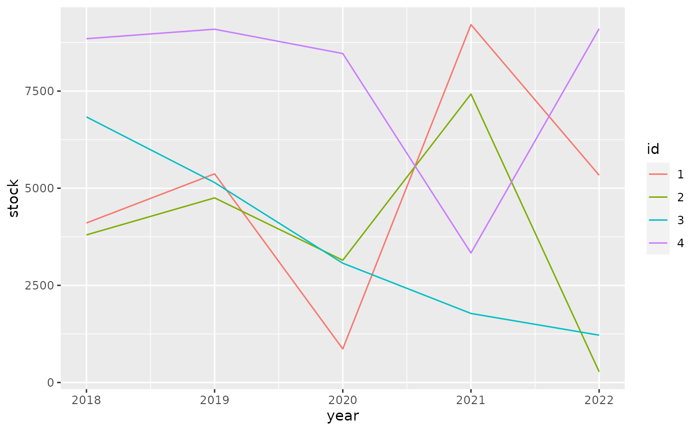

Overview
This vignette shows how to decorate columns for custom formatting. We use the formattable package for demonstration because it already contains useful vector classes that apply a custom formatting to numbers.
library(formattable)
tbl <- tibble(x = digits(9:11, 3))
tbl
#> # A tibble: 3 × 1
#> x
#> <formttbl>
#> 1 9.000
#> 2 10.000
#> 3 11.000The x column in the tibble above is a regular number
with a formatting method. It always will be shown with three digits
after the decimal point. This also applies to columns derived from
x.
library(dplyr)
tbl2 <-
tbl %>%
mutate(
y = x + 1,
z = x * x,
v = y + z,
lag = lag(x, default = x[[1]]),
sin = sin(x),
mean = mean(v),
var = var(x)
)
tbl2
#> # A tibble: 3 × 8
#> x y z v lag sin mean var
#> <dbl:fmt> <dbl:fmt> <dbl:fmt> <dbl:fmt> <dbl:fmt> <dbl:fm> <dbl:f> <dbl>
#> 1 9.000 10.000 81.000 91.000 9.000 0.412 111.667 1
#> 2 10.000 11.000 100.000 111.000 9.000 -0.544 111.667 1
#> 3 11.000 12.000 121.000 133.000 10.000 -1.000 111.667 1Summaries also maintain the formatting.
tbl2 %>%
group_by(lag) %>%
summarize(z = mean(z)) %>%
ungroup()
#> # A tibble: 2 × 2
#> lag z
#> <dbl:fmt> <dbl:fmt>
#> 1 9.000 90.500
#> 2 10.000 121.000Same for pivoting operations.
library(tidyr)
stocks <-
expand_grid(id = factor(1:4), year = 2018:2022) %>%
mutate(stock = currency(runif(20) * 10000))
stocks %>%
pivot_wider(id_cols = id, names_from = year, values_from = stock)
#> # A tibble: 4 × 6
#> id `2018` `2019` `2020` `2021` `2022`
#> <fct> <dbl:fmt> <dbl:fmt> <dbl:fmt> <dbl:fmt> <dbl:fmt>
#> 1 1 $807.50 $8,343.33 $6,007.61 $1,572.08 $73.99
#> 2 2 $4,663.93 $4,977.77 $2,897.67 $7,328.82 $7,725.22
#> 3 3 $8,746.01 $1,749.41 $342.41 $3,203.86 $4,023.28
#> 4 4 $1,956.70 $4,035.38 $636.61 $3,887.01 $9,755.48For ggplot2 we need to do some work to show apply the formatting to the scales.
library(ggplot2)
# Needs https://github.com/tidyverse/ggplot2/pull/4065 or similar
stocks %>%
ggplot(aes(x = year, y = stock, color = id)) +
geom_line()
It pays off to specify formatting very early in the process. The diagram below shows the principal stages of data analysis and exploration from “R for data science”.
The subsequent diagram adds data formats, communication options, and explicit data formatting. The original r4ds transitions are highlighted in bold. There are two principal options where to apply formatting for results: right before communicating them, or right after importing.
Applying formatting early in the process gives the added benefit of showing the data in a useful format during the “Tidy”, “Transform”, and “Visualize” stages. For this to be useful, we need to ensure that the formatting options applied early:
- give a good user experience for analysis
- are easy to set up
- keep sticky in the process of data analysis and exploration
- support the analyst in asking the right questions about the data
- convey the critical information at a glance, with support to go into greater detail easier
- look good for communication
- are applied in the various communication options
- support everything necessary to present the data in the desired way
Ensuring stickiness is difficult, and is insufficient for a dbplyr workflow where parts of the “Tidy”, “Transform” or even “Visualize” stages are run on the database. Often it’s possible to derive a rule-based approach for formatting.
tbl3 <-
tibble(id = letters[1:3], x = 9:11) %>%
mutate(
y = x + 1,
z = x * x,
v = y + z,
lag = lag(x, default = x[[1]]),
sin = sin(x),
mean = mean(v),
var = var(x)
)
tbl3
#> # A tibble: 3 × 9
#> id x y z v lag sin mean var
#> <chr> <int> <dbl> <int> <dbl> <int> <dbl> <dbl> <dbl>
#> 1 a 9 10 81 91 9 0.412 112. 1
#> 2 b 10 11 100 111 9 -0.544 112. 1
#> 3 c 11 12 121 133 10 -1.00 112. 1
tbl3 %>%
mutate(
across(where(is.numeric), ~ digits(.x, 3)),
across(where(~ is.numeric(.x) && mean(.x) > 50), ~ digits(.x, 1))
)
#> # A tibble: 3 × 9
#> id x y z v lag sin mean var
#> <chr> <dbl:fmt> <dbl:fmt> <dbl:fmt> <dbl:fmt> <dbl:f> <dbl:> <dbl> <dbl>
#> 1 a 9.000 10.000 81.0 91.0 9.000 0.412 111.7 1.000
#> 2 b 10.000 11.000 100.0 111.0 9.000 -0.544 111.7 1.000
#> 3 c 11.000 12.000 121.0 133.0 10.000 -1.000 111.7 1.000These rules can be stored in quos():
rules <- quos(
across(where(is.numeric), ~ digits(.x, 3)),
across(where(~ is.numeric(.x) && mean(.x) > 50), ~ digits(.x, 1))
)
tbl3 %>%
mutate(!!!rules)
#> # A tibble: 3 × 9
#> id x y z v lag sin mean var
#> <chr> <dbl:fmt> <dbl:fmt> <dbl:fmt> <dbl:fmt> <dbl:f> <dbl:> <dbl> <dbl>
#> 1 a 9.000 10.000 81.0 91.0 9.000 0.412 111.7 1.000
#> 2 b 10.000 11.000 100.0 111.0 9.000 -0.544 111.7 1.000
#> 3 c 11.000 12.000 121.0 133.0 10.000 -1.000 111.7 1.000This poses a few drawbacks:
- The syntax is repetitive and not very intuitive
- Rules that match multiple columns must be given in reverse order due
to the way
mutate()works, and are executed multiple times
What would a good API for rule-based formatting look like?